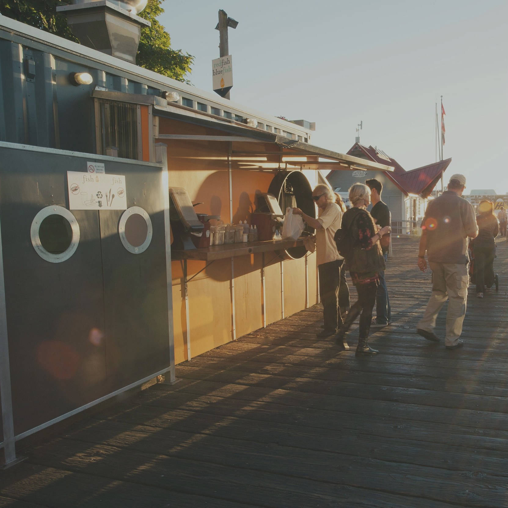
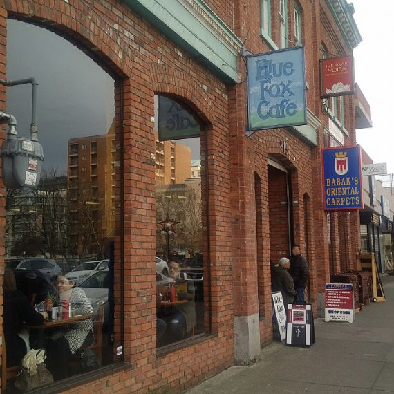
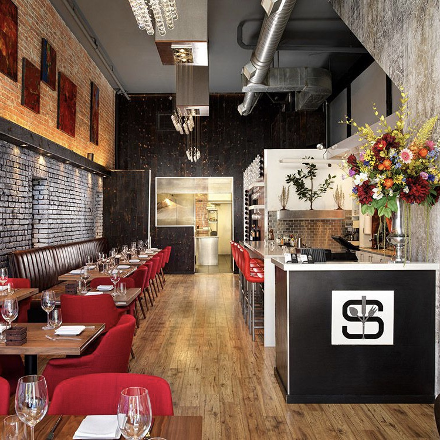
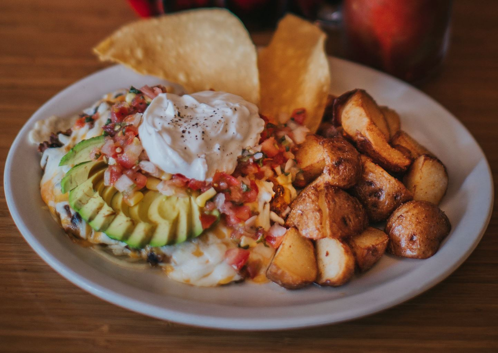
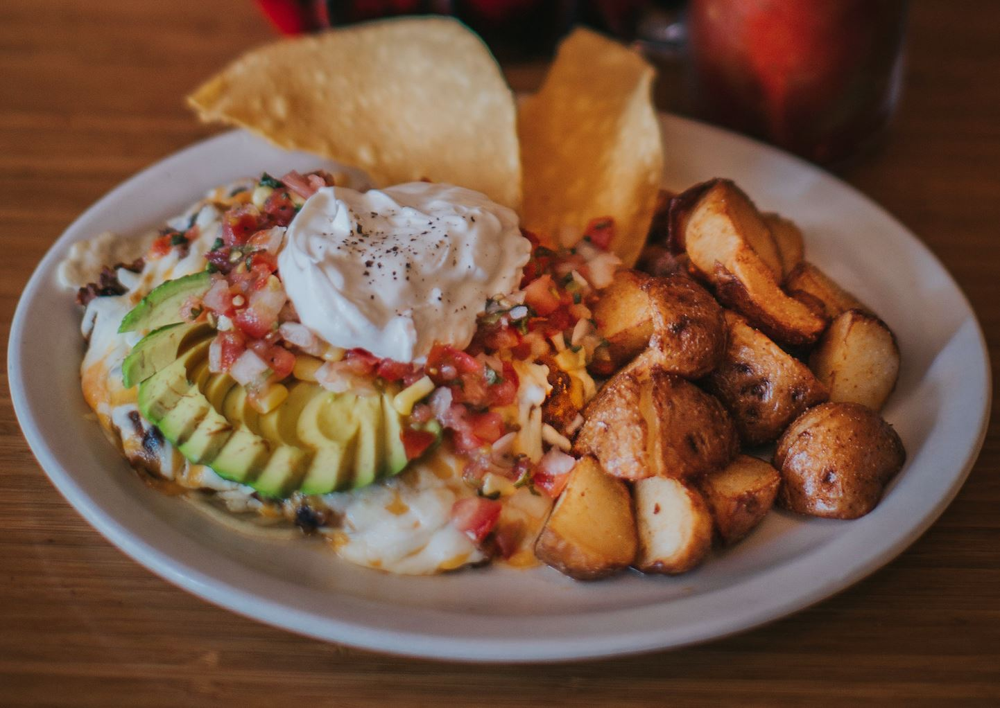

.jpg)
The best 3 restaurants
you MUST visit in Victoria
No.1
Red Fish Blue Fish
Red Fish Blue Fish offers online ordering for pick-up of Victoria’s favourite Fish & Chips, Tacones, West Coast & Wild Grilled or Tempura Fish Sandwiches, Grilled Seafood, Seafood Chowder and other sustainable seafood choices.
More detailsNo.2
Blue Fox Cafe
Blue Fox Cafe is an all-day-breakfast cafe, close to downtown Victoria. It has a lively and fun atmosphere and has kept up its mainstay reputation through a commitment to quality ingredients like local free range eggs, Bond Bond’s Bakery toast, and made-from-scratch sauces and jams.
More detailsNo.3
Saveur Restaurant
Saveur Restaurant offers fine dining food in a casual urban setting. Award-winning chef, Robert Cassels, delivers French-inspired contemporary cuisine through playful and elegant tasting menus, using local ingredients wherever possible.
More detailsRed Fish Blue Fish
Best fish I've ever had
"For real,the the absolute best fish and chips I’ve ever had. Worth the wait. Great service too! Everything about it was perfect!"
Delicious seafood curry chowder
"It was worth the long line up. The portion was generous to be shared. We enjoyed the seafood curry chowder very much."
Worth the wait!
"Came at 2pm on a Monday. Long lineup that moved slow, but once we got our food , all was forgiven!!! I had the Cod Dog and it was huge and delicious. She had the cod tacone, probably the best fish taco ever!!!"


Location&Hours
1006 Wharf St, Victoria, BC
(Open your Google Map)
Open daily, including holidays, 11am-8pm

Blue Fox Cafe
Amazing Breakfast!! Worth the short wait!
"AMAZING food, great coffee and specialty coffees, large portions!TRULY WORTH THE WAIT!! The staff is so friendly and the Cafe itself is charming, you are not eating at a quick chain restaurant, sit back and appreciate the Cafe!"
Oatmeal and the pancakes...yes!
"Every meal is always a pleasure. We got up early and the line was already huge so go prepared to wait. The food is always fantastic and the options for the eggs benny and savoury dishes is excellent."
Excellent place for breakfast
"Blue Fox Cafe is one of the best places to get breakfast to make your morning hungry belly very happy. I've been working in the hotel and service industry here in Victoria for over 8 years. Blue Fox Cafe is definitely amongst my top 3 places for breakfast recommendations."
 


Location&Hours
250-380-1683
101 - 919 Fort Street
Victoria, BC,V8V 3K3
(Open your Google Map)
Weekdays: 8:00am - 2:00pm
Weekends: 8:00am - 3:00pm
Closed on Wednesdays
Saveur Restaurant
One of the best restaurants I’ve ever been to
"I read about Saveur On various top restaurants in Victoria, and it did not disappoint. Beware their hours, as when we were there they were only open Friday through Sunday."
Really great
"Always skeptical when I read reviews, but this was a great experience. Mike our waiter was great, the bartender makes killer drinks, wine list is good and the food was exceptional. The mussels and the tomato salad, we had to ask for more bread to soak up the delicious sauces. Highly recommend."
Always amazing!
"No visit to Victoria is complete without enjoying an incredible culinary experience at Saveur. I’m always blown away by the beautiful presentation and how the creative combination of ingredients/flavours in each dish compliment each other so deliciously. Cocktails are fantastic as well!"


Location&Hours
info@saveurrestaurant.ca
(250) 590-9251
658 Herald Street
Victoria,BC,V8W 1S7
(Open your Google Map)
Thursday
5:00 pm - 9:00 pm
Friday – Saturday
12:00 pm - 9:00 pm
Sunday
12:00 - 5:00 PM
By Reservation